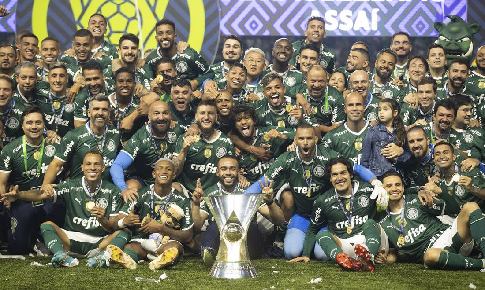
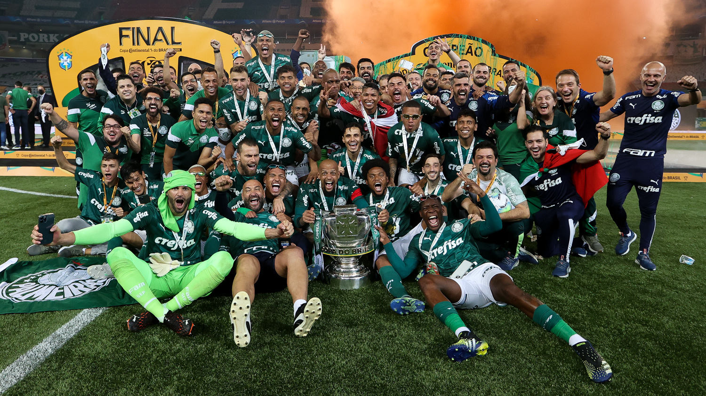
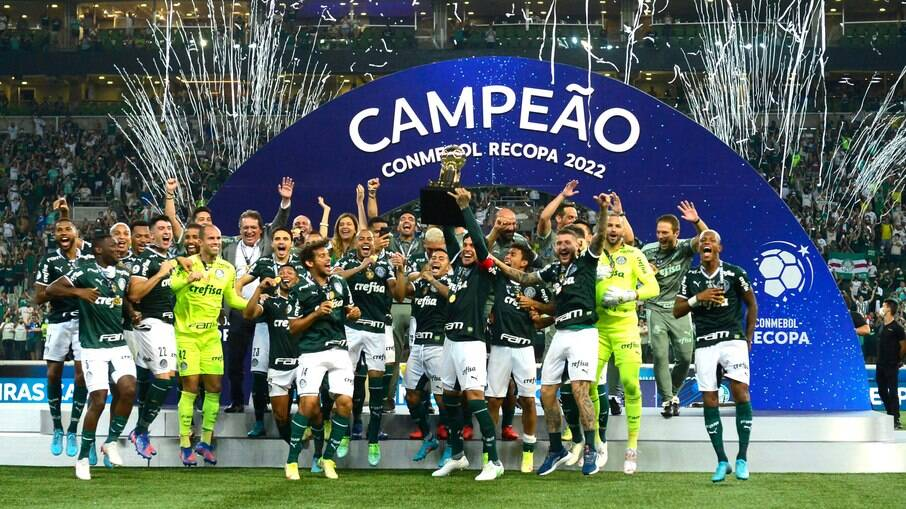
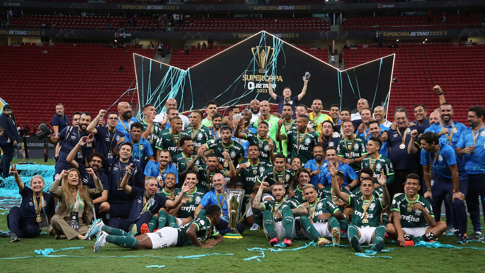
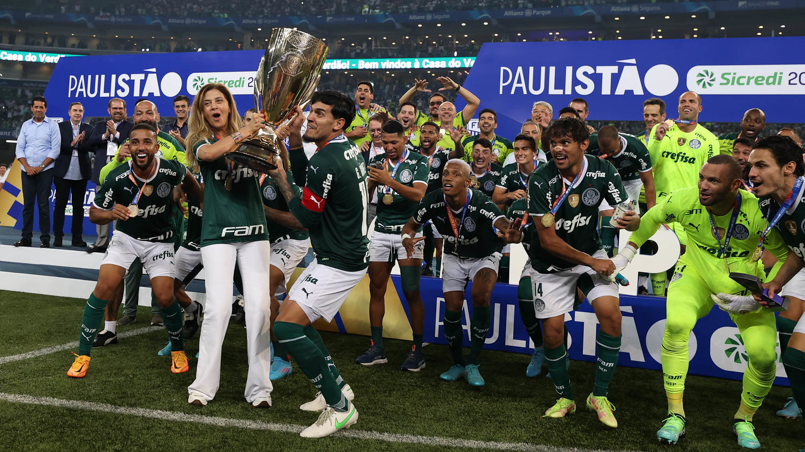

Nos últimos anos o Palmeiras vem ganhando muitos títulos:
Dentre os outros títulos teve a Libertadores de 2020 contra o Prantos no Maracanã com um gol de Baby Lopes praticamente no último minuto e consagrava o Bi da Libertadores pro Verdão.

Muitas vezes criticado por não ter feito bons campeonatos nos pontos corridos, Abel foi lá e acabou conseguindo conquistar seu primeiro campeonato brasileiro com um pé nas costas.
Ainda no primeiro ano de Abel, ele conseguiu o feito de ganhar mais um campeonato mata-mata, a Copa do Brasil em cima do Grêmio do chorão do Renato Gaúcho.
A Recopa de 2022 foi também pra provar que Abel também se importava com títulos menores apesar de ter perdido o mesmo no ano anterior.
Ganhar mais um título em cima do Flacheiro é muito bom, melhor ainda é ganhar de virada num jogaço, 4x3 pro Palmeiras.
Abel não satisfeito de ter sido Bi-campeão consecutivo da Libertadores foi lá e ganhou dois Paulistinhas consecutivos em cima do Trik4s Água Santa.
O Palmeiras se torna o maior time do Universo só de ter ganhado todos esses títulos em cima de times minúsculos.